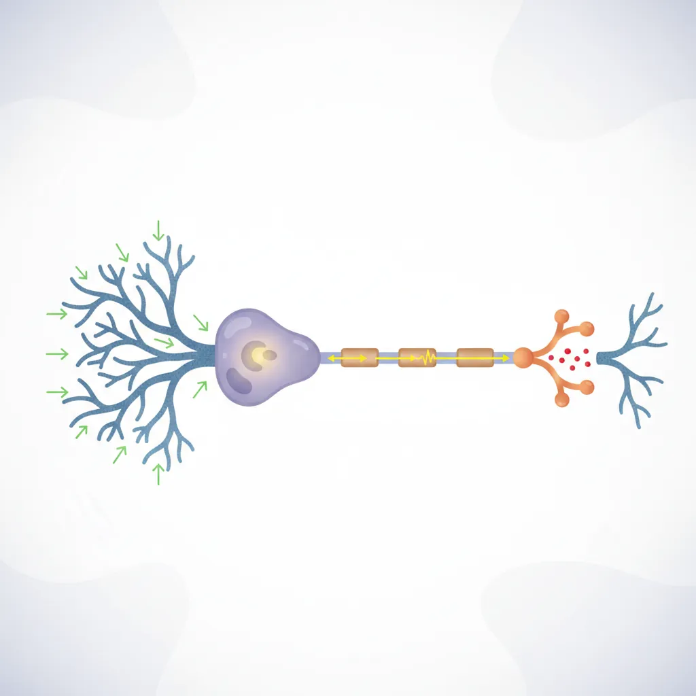
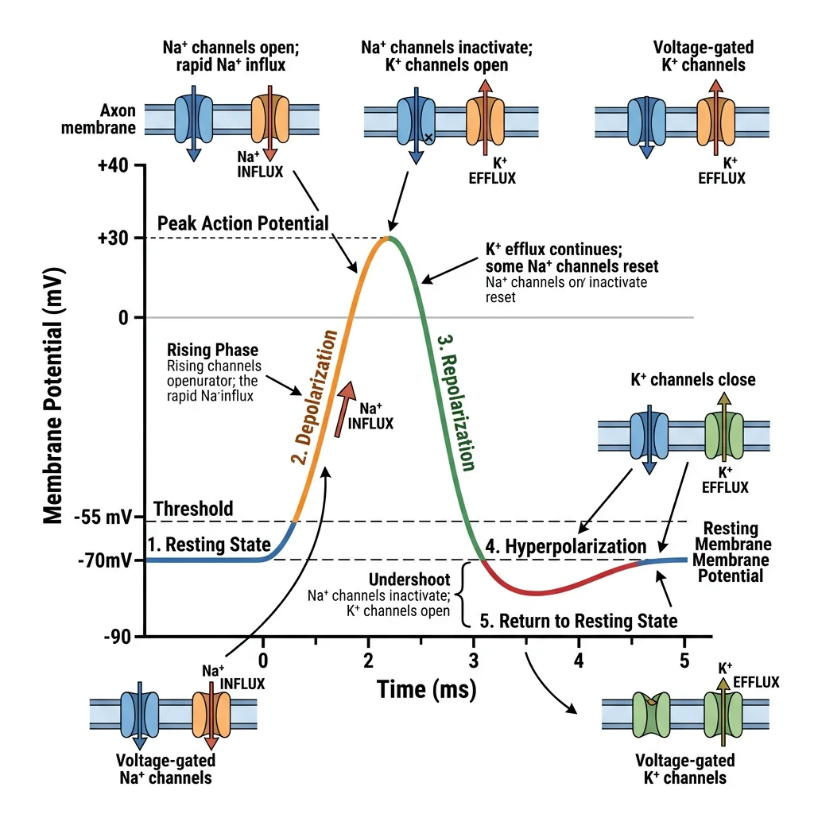
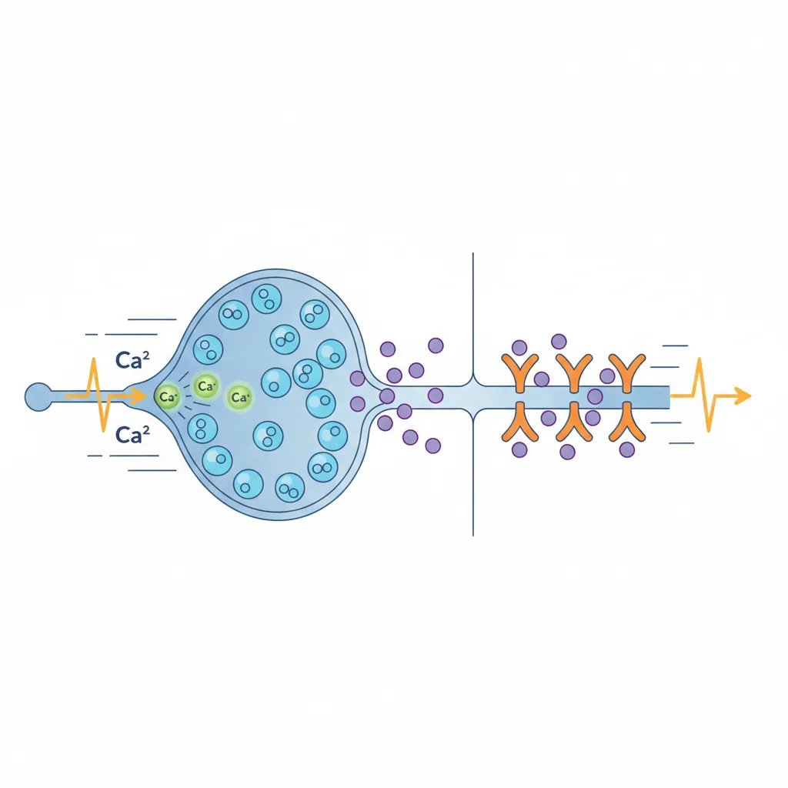
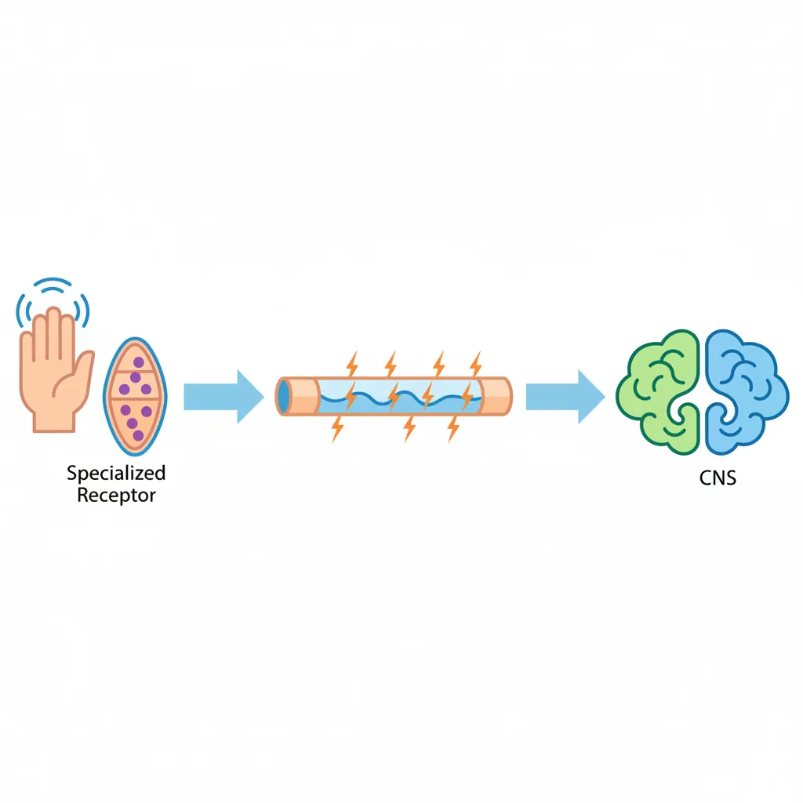
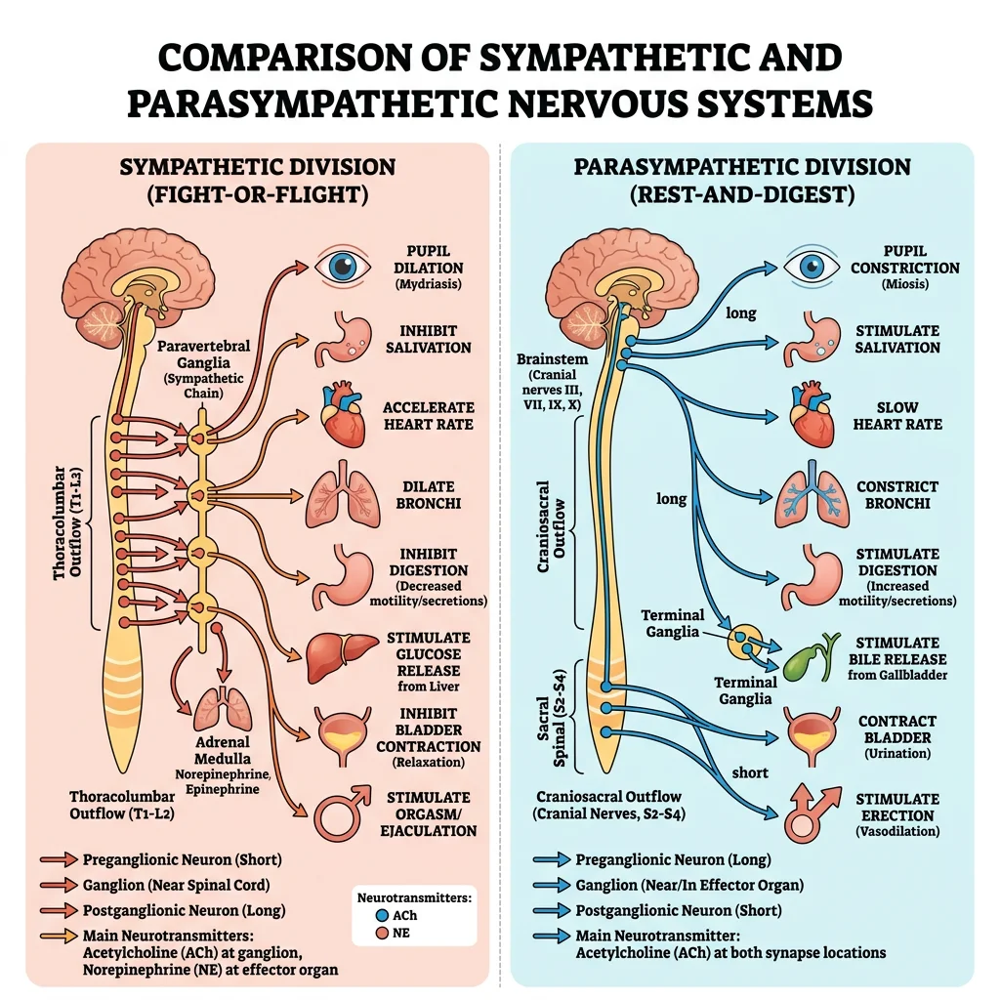

Physiology Mastery
Homeostasis & Feedback
Set points, feedback loops, allostasisNeurophysiology & Action Potentials
Neurons, action potentials, synapsesCardiac Electrophysiology & Hemodynamics
Heart rhythm, hemodynamics, cardiac outputRespiratory Mechanics & Gas Exchange
Breathing mechanics, gas exchange, V/QRenal Physiology & Fluid Balance
Nephron function, filtration, acid-baseGI Physiology & Absorption
Motility, secretion, nutrient absorptionEndocrine Regulation & Metabolism
Hormones, thyroid, adrenal, metabolismExercise Physiology & Adaptation
Acute responses, training adaptationsCellular & Membrane Physiology
Ion transport, signaling, second messengersBlood & Immune Physiology
Hematopoiesis, coagulation, immunityReproductive & Developmental
Reproduction, pregnancy, fetal physiologyIntegrative & Clinical Physiology
Stress, shock, sepsis, agingBasic Neural Function
The nervous system is the body's command-and-control network — a breathtakingly complex signaling system comprising roughly 86 billion neurons and an even greater number of supporting glial cells. Every sensation you experience, every thought you think, every movement you make, and every organ your body regulates depends on the electrical and chemical signals coursing through this living circuitry.
In Part 1, we established that homeostatic control loops require sensors, integrating centers, and effectors connected by afferent and efferent pathways. The nervous system is those pathways — and much more. Understanding how individual neurons generate and transmit signals is the foundation for understanding everything from a simple knee-jerk reflex to consciousness itself.

Neuron Structure & Types
A neuron has four functional regions, each specialized for a different role in signal processing:
| Region | Structure | Function |
|---|---|---|
| Dendrites | Branching tree-like extensions from the cell body | Receive incoming signals (input zone) — contain ligand-gated receptors |
| Cell Body (Soma) | Contains nucleus, organelles, rough ER (Nissl bodies) | Integration zone — sums all incoming signals; protein synthesis |
| Axon | Single long process; may be myelinated; branches at end | Conduction zone — propagates action potentials away from soma |
| Axon Terminal (Synaptic Bouton) | Swollen endings containing synaptic vesicles | Output zone — releases neurotransmitter into synaptic cleft |
The axon hillock — where the axon emerges from the soma — is the trigger zone. This tiny region has the highest density of voltage-gated Na⁺ channels in the entire neuron, giving it the lowest threshold for firing an action potential. It's the "decision point" that determines whether the neuron fires or stays silent.
Neuron Classification
By Structure (number of processes):
- Multipolar: Many dendrites, one axon — most common (motor neurons, interneurons, pyramidal cells)
- Bipolar: One dendrite, one axon — found in retina, olfactory epithelium, vestibular system
- Unipolar (Pseudounipolar): Single process that splits into peripheral and central branches — dorsal root ganglion sensory neurons
By Function:
- Sensory (Afferent): Carry signals FROM receptors TO the CNS
- Motor (Efferent): Carry signals FROM the CNS TO effectors (muscles, glands)
- Interneurons: Connect neurons within the CNS — 99% of all neurons are interneurons
Glial Cells & Roles
Glial cells (neuroglia) outnumber neurons and are essential for nervous system function — far from being passive "glue," they actively regulate the neuronal environment, form myelin, and participate in signaling.
| Glial Cell | Location | Key Functions |
|---|---|---|
| Astrocytes | CNS | Blood-brain barrier maintenance, K⁺ buffering, glutamate uptake, metabolic support (lactate shuttle), synapse formation |
| Oligodendrocytes | CNS | Myelinate multiple axons (up to 50 segments each); one cell wraps many axons |
| Schwann Cells | PNS | Myelinate one axon segment each; also guide axon regeneration after injury |
| Microglia | CNS | Immune defense — phagocytose debris, pathogens; synaptic pruning during development |
| Ependymal Cells | CNS (ventricles) | Line brain ventricles and spinal canal; produce and circulate cerebrospinal fluid (CSF) |
| Satellite Cells | PNS (ganglia) | Support and regulate neuronal environment in peripheral ganglia |
Resting Membrane Potential
At rest, a typical neuron has a voltage of approximately −70 mV across its membrane (inside negative relative to outside). This resting membrane potential (RMP) is the charged battery that makes all electrical signaling possible. It exists because of three factors:
- Ion concentration gradients: The Na⁺/K⁺-ATPase maintains high K⁺ inside (155 mM) and high Na⁺ outside (145 mM)
- Selective membrane permeability: At rest, the membrane is ~40× more permeable to K⁺ than Na⁺ (through K⁺ leak channels)
- Electrogenic Na⁺/K⁺-ATPase: Pumps 3 Na⁺ out for every 2 K⁺ in, creating a net negative charge inside (contributes about −3 mV)
Since K⁺ permeability dominates at rest, the RMP sits close to the K⁺ equilibrium potential (−98 mV) but not at it — because there's a small but significant Na⁺ leak pulling the voltage positive, settling around −70 mV.
import numpy as np
import matplotlib.pyplot as plt
# Goldman-Hodgkin-Katz equation: how permeability ratios set the resting potential
# Vm = (RT/F) * ln((P_K*[K]o + P_Na*[Na]o + P_Cl*[Cl]i) /
# (P_K*[K]i + P_Na*[Na]i + P_Cl*[Cl]o))
R = 8.314 # J/(mol·K)
T = 310 # K (37°C)
F = 96485 # C/mol
# Concentrations (mM) — from Part 1
K_o, K_i = 4, 155
Na_o, Na_i = 145, 12
Cl_o, Cl_i = 120, 4
# Vary the P_Na/P_K ratio to show its effect on membrane potential
ratios = np.linspace(0.01, 0.5, 100)
Vm_values = []
for ratio in ratios:
P_K = 1.0
P_Na = ratio
P_Cl = 0.45
numerator = P_K * K_o + P_Na * Na_o + P_Cl * Cl_i
denominator = P_K * K_i + P_Na * Na_i + P_Cl * Cl_o
Vm = (R * T / F) * np.log(numerator / denominator) * 1000 # mV
Vm_values.append(Vm)
plt.figure(figsize=(9, 5))
plt.plot(ratios, Vm_values, 'b-', linewidth=2)
plt.axhline(y=-70, color='green', linestyle='--', alpha=0.7, label='Typical RMP (−70 mV)')
plt.axhline(y=-55, color='red', linestyle='--', alpha=0.7, label='Threshold (−55 mV)')
plt.axvline(x=0.04, color='gray', linestyle=':', alpha=0.7, label='Resting P_Na/P_K ≈ 0.04')
plt.xlabel('P_Na / P_K Permeability Ratio', fontsize=12)
plt.ylabel('Membrane Potential (mV)', fontsize=12)
plt.title('Membrane Potential vs Na⁺/K⁺ Permeability Ratio (GHK)', fontsize=14)
plt.legend(fontsize=10)
plt.grid(True, alpha=0.3)
plt.tight_layout()
plt.show()
# Print key values
for r in [0.04, 0.1, 0.3, 0.5]:
P_Na = r
num = 1.0*K_o + P_Na*Na_o + 0.45*Cl_i
den = 1.0*K_i + P_Na*Na_i + 0.45*Cl_o
vm = (R*T/F) * np.log(num/den) * 1000
print(f"P_Na/P_K = {r:.2f} → Vm = {vm:.1f} mV")
Electrical Signaling
The resting potential is the starting point — now we explore how neurons use that stored electrical energy to generate signals. The action potential (AP) is the fundamental unit of long-distance neural communication: a brief, explosive reversal of membrane potential that propagates along the axon without diminishing in amplitude.

Ion Channels
Ion channels are membrane proteins that form selective pores, allowing specific ions to flow down their electrochemical gradients at rates up to 100 million ions per second. They are classified by their gating mechanism:
| Channel Type | Gating Mechanism | Key Examples | Role in Signaling |
|---|---|---|---|
| Leak (Non-gated) | Always open | K⁺ leak channels (KCNK, TREK) | Set resting membrane potential |
| Voltage-Gated | Open/close in response to membrane voltage | Nav1.x (Na⁺), Kv (K⁺), Cav (Ca²⁺) | Action potentials, neurotransmitter release |
| Ligand-Gated | Open when specific molecule binds | nAChR (ACh), AMPA/NMDA (glutamate), GABA-A (GABA) | Synaptic transmission (EPSPs/IPSPs) |
| Mechanically-Gated | Open by physical deformation | Piezo1/2, TRPV4 | Touch, pressure, hearing, proprioception |
Action Potential Phases
The action potential is a stereotyped sequence of membrane potential changes, driven by the coordinated opening and closing of voltage-gated channels. It unfolds in 5 phases over ~1-2 milliseconds:
The Five Phases of an Action Potential
- Resting State (−70 mV): Na⁺ activation gates closed, inactivation gates open (ready). K⁺ channels closed. Na⁺/K⁺-ATPase maintains gradients.
- Depolarization to Threshold (−70 → −55 mV): A graded potential (from synaptic input) spreads to the axon hillock. If it reaches −55 mV (threshold), voltage-gated Na⁺ channels begin opening.
- Rising Phase / Depolarization (−55 → +30 mV): Na⁺ channels open explosively (positive feedback). Na⁺ floods in down its electrochemical gradient. Membrane potential reverses — peaks near +30 mV (approaching E_Na = +67 mV).
- Falling Phase / Repolarization (+30 → −70 mV): Na⁺ inactivation gates close (channel refractory). Voltage-gated K⁺ channels open (delayed). K⁺ flows out, restoring negative potential.
- Undershoot / Hyperpolarization (−70 → −90 → −70 mV): K⁺ channels close slowly — membrane briefly overshoots past resting potential. Na⁺/K⁺-ATPase restores resting gradients.
import numpy as np
import matplotlib.pyplot as plt
# Hodgkin-Huxley style action potential simulation (simplified)
# Uses gating variables m, h, n for Na+ and K+ channels
dt = 0.01 # ms
t = np.arange(0, 8, dt) # 8 ms simulation
# Parameters (Hodgkin-Huxley, squid giant axon — scaled)
C_m = 1.0 # µF/cm²
g_Na = 120.0 # mS/cm² (max Na+ conductance)
g_K = 36.0 # mS/cm² (max K+ conductance)
g_L = 0.3 # mS/cm² (leak conductance)
E_Na = 50.0 # mV
E_K = -77.0 # mV
E_L = -54.4 # mV
# Gating variable rate functions
def alpha_m(V): return 0.1 * (V + 40) / (1 - np.exp(-(V + 40) / 10))
def beta_m(V): return 4.0 * np.exp(-(V + 65) / 18)
def alpha_h(V): return 0.07 * np.exp(-(V + 65) / 20)
def beta_h(V): return 1.0 / (1 + np.exp(-(V + 35) / 10))
def alpha_n(V): return 0.01 * (V + 55) / (1 - np.exp(-(V + 55) / 10))
def beta_n(V): return 0.125 * np.exp(-(V + 65) / 80)
# Initial conditions
V = np.zeros(len(t))
V[0] = -65.0
m = alpha_m(V[0]) / (alpha_m(V[0]) + beta_m(V[0]))
h = alpha_h(V[0]) / (alpha_h(V[0]) + beta_h(V[0]))
n = alpha_n(V[0]) / (alpha_n(V[0]) + beta_n(V[0]))
m_arr, h_arr, n_arr = [m], [h], [n]
# Stimulus current: brief pulse at t = 1 ms
I_stim = np.zeros(len(t))
I_stim[(t >= 1) & (t < 1.5)] = 10.0 # µA/cm²
for i in range(1, len(t)):
# Ionic currents
I_Na = g_Na * m**3 * h * (V[i-1] - E_Na)
I_K = g_K * n**4 * (V[i-1] - E_K)
I_L = g_L * (V[i-1] - E_L)
# Voltage update
dV = (I_stim[i] - I_Na - I_K - I_L) / C_m * dt
V[i] = V[i-1] + dV
# Gating variable updates
m += (alpha_m(V[i]) * (1-m) - beta_m(V[i]) * m) * dt
h += (alpha_h(V[i]) * (1-h) - beta_h(V[i]) * h) * dt
n += (alpha_n(V[i]) * (1-n) - beta_n(V[i]) * n) * dt
m_arr.append(m)
h_arr.append(h)
n_arr.append(n)
fig, (ax1, ax2) = plt.subplots(2, 1, figsize=(10, 7), sharex=True)
ax1.plot(t, V, 'b-', linewidth=2)
ax1.axhline(y=-55, color='red', linestyle='--', alpha=0.5, label='Threshold')
ax1.set_ylabel('Membrane Potential (mV)', fontsize=12)
ax1.set_title('Hodgkin-Huxley Action Potential Simulation', fontsize=14)
ax1.legend()
ax1.grid(True, alpha=0.3)
ax2.plot(t, m_arr, 'r-', linewidth=1.5, label='m (Na⁺ activation)')
ax2.plot(t, h_arr, 'r--', linewidth=1.5, label='h (Na⁺ inactivation)')
ax2.plot(t, n_arr, 'b-', linewidth=1.5, label='n (K⁺ activation)')
ax2.set_xlabel('Time (ms)', fontsize=12)
ax2.set_ylabel('Gating Variable', fontsize=12)
ax2.legend(fontsize=10)
ax2.grid(True, alpha=0.3)
plt.tight_layout()
plt.show()
Threshold & Refractory Periods
The threshold (typically ~−55 mV for most neurons) is the critical membrane voltage at which enough Na⁺ channels open to trigger the explosive positive feedback cycle. Below threshold, graded potentials decay passively. At threshold, the all-or-nothing law takes over.
| Property | Absolute Refractory Period | Relative Refractory Period |
|---|---|---|
| Duration | ~1 ms | ~2-4 ms after absolute |
| Channel State | Na⁺ channels inactivated (h gate closed) | Some Na⁺ channels recovering; K⁺ still open |
| Can a New AP Fire? | NO — impossible, regardless of stimulus strength | YES — but only with a stronger-than-normal stimulus |
| Significance | Ensures unidirectional propagation; limits max firing rate | Allows frequency coding of stimulus intensity |
Saltatory Conduction
In unmyelinated axons, the action potential propagates continuously — each patch of membrane depolarizes the next, like a row of dominoes. This is slow (~1 m/s). Myelination changes everything.
Myelin (formed by oligodendrocytes in the CNS and Schwann cells in the PNS) wraps axons in an insulating lipid sheath, with gaps called Nodes of Ranvier occurring every ~1 mm. Ion channels are concentrated at these nodes, and the action potential "jumps" from node to node — this is saltatory conduction (Latin saltare = "to leap").
Conduction Velocity Comparison
| Fiber Type | Diameter (µm) | Myelinated? | Velocity (m/s) | Example |
|---|---|---|---|---|
| Aα | 12-20 | Yes (heavy) | 70-120 | Motor neurons to skeletal muscle, proprioception |
| Aβ | 5-12 | Yes | 30-70 | Touch, pressure |
| Aδ | 1-5 | Yes (light) | 5-30 | Fast pain, temperature (sharp, localized) |
| B | 1-3 | Yes (light) | 3-15 | Preganglionic autonomic |
| C | 0.2-1.5 | No | 0.5-2 | Slow pain (burning, aching), postganglionic sympathetic |
Clinical Pearl: Local anesthetics (lidocaine) block voltage-gated Na⁺ channels. Small, unmyelinated C fibers are blocked first (pain disappears), followed by larger myelinated fibers (touch, then motor). This is why you lose pain sensation before losing the ability to move — a clinically useful sequence.
Synaptic Transmission
Action potentials carry signals along axons, but neurons don't physically touch each other. Communication between neurons (and between neurons and effector cells) occurs at specialized junctions called synapses. The synapse is where information is processed, filtered, amplified, or inhibited — it's the "decision point" of neural circuitry.

Chemical vs Electrical Synapses
| Feature | Chemical Synapse | Electrical Synapse (Gap Junction) |
|---|---|---|
| Cleft Width | 20-40 nm | 3.5 nm (connexon channels bridge the gap) |
| Transmission | Neurotransmitter release → receptor binding | Direct ionic current flow through connexons |
| Direction | Unidirectional (pre → post) | Bidirectional |
| Speed | ~0.5 ms synaptic delay | Virtually instantaneous |
| Plasticity | Highly modifiable (learning, drugs) | Limited modulation |
| Location | Most CNS and NMJ synapses | Cardiac muscle, smooth muscle, some CNS interneurons |
Neurotransmitter Release Cycle
Chemical synaptic transmission follows a precise sequence of events, all of which are potential targets for drugs and disease:
- Synthesis: Neurotransmitter (NT) synthesized in soma or terminal
- Storage: NT packaged into synaptic vesicles by vesicular transporters
- Action Potential Arrival: AP depolarizes the axon terminal
- Ca²⁺ Influx: Voltage-gated Ca²⁺ channels open → Ca²⁺ floods in
- Exocytosis: Ca²⁺ triggers SNARE-mediated vesicle fusion → NT released into cleft
- Receptor Binding: NT binds postsynaptic receptors → ion channels open or signaling cascades activated
- Termination: NT removed by (a) reuptake pumps, (b) enzymatic degradation (e.g., AChE), or (c) diffusion
Case Study: Pharmacological Targets at the Synapse
- SSRIs (Prozac, Zoloft): Block serotonin reuptake transporters → more serotonin in the cleft → treats depression
- Botulinum toxin (Botox): Cleaves SNARE proteins → prevents vesicle fusion → blocks ACh release → muscle paralysis
- Nerve agents (Sarin): Irreversibly inhibit acetylcholinesterase → ACh accumulates → continuous muscle stimulation → paralysis, death
- Curare: Competitive antagonist at nicotinic ACh receptors → blocks neuromuscular transmission → skeletal muscle paralysis
- Cocaine: Blocks dopamine reuptake → excessive dopaminergic signaling → euphoria, addiction
EPSP/IPSP Summation
When a neurotransmitter binds its receptor, it produces a small, graded change in the postsynaptic membrane potential:
- EPSP (Excitatory Postsynaptic Potential): Depolarization toward threshold (e.g., glutamate opens Na⁺/K⁺ channels → net depolarization of ~+1 mV)
- IPSP (Inhibitory Postsynaptic Potential): Hyperpolarization away from threshold (e.g., GABA opens Cl⁻ channels → hyperpolarization of ~−1 mV)
A single EPSP (~1 mV) isn't enough to reach threshold (~15 mV above RMP). The neuron must sum many inputs through temporal summation (rapid-fire from one synapse) and spatial summation (simultaneous input from many synapses). A typical cortical neuron receives 5,000–10,000 synaptic inputs and integrates them all at the axon hillock.
import numpy as np
import matplotlib.pyplot as plt
# Simulate EPSP/IPSP summation at a neuron
dt = 0.1 # ms
t = np.arange(0, 50, dt)
V_rest = -70.0 # mV
V_threshold = -55.0
tau = 5.0 # membrane time constant (ms)
# Individual synaptic inputs (time of input, amplitude in mV, type)
inputs = [
(5, 3.0, 'EPSP'),
(8, 3.0, 'EPSP'), # temporal summation with first
(10, 3.0, 'EPSP'),
(10, 2.5, 'EPSP'), # spatial summation (simultaneous)
(15, -4.0, 'IPSP'), # inhibitory input
(25, 4.0, 'EPSP'),
(26, 4.0, 'EPSP'),
(27, 4.0, 'EPSP'),
(28, 4.0, 'EPSP'), # enough temporal summation to reach threshold
]
V = np.full(len(t), V_rest)
for i in range(1, len(t)):
# Passive decay toward resting potential
dV_decay = -(V[i-1] - V_rest) / tau * dt
V[i] = V[i-1] + dV_decay
# Add synaptic inputs (as instantaneous voltage jumps)
for inp_t, amp, inp_type in inputs:
if abs(t[i] - inp_t) < dt:
V[i] += amp
fig, ax = plt.subplots(figsize=(10, 5))
ax.plot(t, V, 'b-', linewidth=2, label='Membrane Potential')
ax.axhline(y=V_threshold, color='red', linestyle='--', alpha=0.7, label='Threshold (−55 mV)')
ax.axhline(y=V_rest, color='green', linestyle='--', alpha=0.5, label='Resting (−70 mV)')
# Mark inputs
for inp_t, amp, inp_type in inputs:
color = 'green' if inp_type == 'EPSP' else 'red'
ax.axvline(x=inp_t, color=color, alpha=0.2, linewidth=1)
ax.set_xlabel('Time (ms)', fontsize=12)
ax.set_ylabel('Membrane Potential (mV)', fontsize=12)
ax.set_title('Synaptic Integration: EPSP/IPSP Summation', fontsize=14)
ax.legend(fontsize=10)
ax.grid(True, alpha=0.3)
ax.annotate('Temporal\nSummation', xy=(8, -62), fontsize=9, ha='center', color='#132440')
ax.annotate('IPSP', xy=(15, -68), fontsize=9, ha='center', color='#BF092F')
ax.annotate('Reaches\nThreshold!', xy=(29, -55), fontsize=9, ha='center', color='red', fontweight='bold')
plt.tight_layout()
plt.show()
Synaptic Plasticity
Synaptic plasticity — the ability of synapses to strengthen or weaken over time — is the cellular basis of learning and memory. It's why practice makes perfect and why traumatic experiences leave lasting marks on the brain.
Historical Milestone: Hebb's Rule (1949)
Canadian psychologist Donald Hebb proposed: "Neurons that fire together, wire together." If neuron A repeatedly helps fire neuron B, the synapse between them strengthens. This predictive insight was later confirmed experimentally as Long-Term Potentiation (LTP).
- LTP (Long-Term Potentiation): High-frequency stimulation → NMDA receptor activation → Ca²⁺ influx → insertion of more AMPA receptors → stronger EPSP. This is the molecular mechanism of memory formation in the hippocampus.
- LTD (Long-Term Depression): Low-frequency stimulation → modest Ca²⁺ → removal of AMPA receptors → weaker EPSP. This is how unused connections are pruned — essential for skill refinement.
Sensory & Motor Systems
The nervous system's purpose is to receive information about the world (sensory), decide what to do (integration), and execute actions (motor). These three functions form the basis of all neural processing, from the simplest reflex to the most complex voluntary movement.

Receptors & Transduction
Sensory transduction is the process of converting a physical stimulus (light, sound, pressure, heat, chemicals) into an electrical signal (receptor potential) that the nervous system can process. Each receptor type is specialized for a specific stimulus modality:
| Receptor Type | Stimulus | Mechanism | Examples |
|---|---|---|---|
| Mechanoreceptors | Pressure, stretch, vibration | Ion channels open by membrane deformation | Meissner's (touch), Pacinian (vibration), baroreceptors |
| Thermoreceptors | Temperature | TRP channels activated by heat/cold | TRPV1 (>43°C, capsaicin), TRPM8 (<25°C, menthol) |
| Nociceptors | Tissue damage | Multiple channels (TRPV1, ASIC, P2X) | Free nerve endings in skin, viscera |
| Photoreceptors | Light | Photoisomerization of retinal → G-protein cascade | Rods (dim light), Cones (color) |
| Chemoreceptors | Chemicals | Ligand-receptor binding → ion channel/second messenger | Olfactory neurons, taste cells, carotid body (O₂/CO₂) |
Ascending Sensory Pathways
Sensory information travels from the periphery to the cerebral cortex via two main ascending pathways, each carrying different types of sensation:
- Dorsal Column–Medial Lemniscus (DCML): Carries fine touch, vibration, proprioception, and two-point discrimination. Fast, myelinated Aβ fibers → ascends ipsilaterally in dorsal columns → crosses midline in medulla → thalamus → primary somatosensory cortex (S1).
- Spinothalamic Tract (STT): Carries pain, temperature, and crude touch. Aδ and C fibers → synapse in dorsal horn → crosses midline in spinal cord → ascends contralaterally → thalamus → S1.
Clinical Pearl: In Brown-Séquard syndrome (hemisection of the spinal cord), ipsilateral fine touch/proprioception is lost (DCML crosses in medulla) while contralateral pain/temperature is lost (STT crosses in the cord). This classic dissociation is a high-yield diagnostic clue.
Motor Cortex & Corticospinal Tract
Voluntary movement originates in the primary motor cortex (precentral gyrus, Brodmann area 4). Upper motor neurons here send their axons down through the corticospinal tract — the main pathway for voluntary skeletal muscle control.
The corticospinal tract crosses at the pyramidal decussation in the medulla — which is why the right brain controls the left body and vice versa. Damage above the decussation (stroke in the right motor cortex) causes contralateral (left-sided) weakness. Damage below (spinal cord injury) causes ipsilateral weakness.
Reflex Arcs
A reflex is a rapid, involuntary, stereotyped response to a stimulus — the fastest type of neural processing because it doesn't require conscious brain involvement. The simplest reflexes involve as few as two neurons:
The Patellar (Knee-Jerk) Reflex — A Monosynaptic Arc
- Stimulus: Tap on patellar tendon stretches the quadriceps muscle
- Sensor: Muscle spindle (stretch receptor) in quadriceps detects the stretch
- Afferent: Ia sensory neuron carries signal to spinal cord (L2-L4)
- Integration: Direct synapse (monosynaptic) onto alpha motor neuron in anterior horn — NO interneuron needed
- Efferent: Alpha motor neuron fires to quadriceps
- Response: Quadriceps contracts → leg extends (knee jerk)
Reciprocal Inhibition: Simultaneously, an interneuron inhibits the motor neuron to the hamstrings (antagonist muscle), preventing opposition to the movement. Elegant engineering!
Clinical Use: Testing the patellar reflex checks the integrity of the L2-L4 spinal segments, the peripheral nerves, and the neuromuscular junction. Absent reflex = lower motor neuron lesion or peripheral neuropathy. Hyperactive reflex = upper motor neuron lesion (loss of cortical inhibition).
Autonomic Nervous System
The autonomic nervous system (ANS) is the involuntary division of the nervous system — it regulates visceral functions (heart rate, digestion, breathing, pupil size, glandular secretion) without conscious effort. It's the "autopilot" that keeps your internal organs running while you focus on the external world.

Sympathetic vs Parasympathetic
| Feature | Sympathetic ("Fight or Flight") | Parasympathetic ("Rest & Digest") |
|---|---|---|
| Origin | Thoracolumbar (T1-L2) spinal cord | Craniosacral (CN III, VII, IX, X + S2-S4) |
| Ganglia Location | Close to spinal cord (paravertebral chain) | Close to or within target organ |
| Preganglionic Fiber | Short, myelinated, releases ACh | Long, myelinated, releases ACh |
| Postganglionic Fiber | Long, unmyelinated, releases norepinephrine (NE) | Short, unmyelinated, releases ACh |
| Heart | ↑ Rate (chronotropic), ↑ Contractility (inotropic) | ↓ Rate (vagal tone dominant at rest) |
| Bronchi | Dilate (β₂ receptors) | Constrict (muscarinic M₃) |
| GI Tract | ↓ Motility, ↓ Secretion | ↑ Motility, ↑ Secretion |
| Pupils | Dilate (mydriasis) | Constrict (miosis) |
| Blood Vessels | Constrict (α₁, most vessels) | No direct innervation (most vessels) |
Neuroeffector Junctions
Autonomic neurons communicate with their target organs through neuroeffector junctions. Unlike the precise neuromuscular junction, autonomic fibers have diffuse swellings called varicosities that release neurotransmitter over a wider area.
| Receptor Type | Neurotransmitter | Location | Key Effect |
|---|---|---|---|
| α₁ | NE | Blood vessels, iris dilator | Vasoconstriction, pupil dilation |
| α₂ | NE | Presynaptic terminals, pancreas | ↓ NE release (autoreceptor), ↓ insulin |
| β₁ | NE, Epi | Heart, kidney (JGA) | ↑ Heart rate/contractility, ↑ renin |
| β₂ | Epi (circulating) | Bronchi, blood vessels (skeletal muscle) | Bronchodilation, vasodilation |
| Muscarinic (M₂) | ACh | Heart (SA/AV nodes) | ↓ Heart rate (bradycardia) |
| Muscarinic (M₃) | ACh | Smooth muscle, glands | Contraction, secretion |
| Nicotinic (Nₙ) | ACh | All autonomic ganglia | Ganglionic transmission |
Organ-Specific Autonomic Responses
Case Study: Autonomic Storm — Pheochromocytoma
Background: A pheochromocytoma is a catecholamine-secreting tumor of the adrenal medulla. It produces episodic surges of epinephrine and norepinephrine, creating a dramatic sympathetic "storm."
Classic Presentation (5 P's):
- Pressure (severe hypertension, often paroxysmal)
- Pain (headache from hypertension)
- Perspiration (profuse sweating)
- Palpitations (tachycardia, arrhythmias)
- Pallor (vasoconstriction of skin vessels)
Treatment: Surgical removal — but MUST give α-blockers (phenoxybenzamine) before β-blockers. Why? If you block β₂ first (which vasodilates skeletal muscle vessels), unopposed α₁ vasoconstriction can cause a lethal hypertensive crisis.
Higher-Level Neurophysiology
The preceding sections covered the building blocks — individual neurons, synapses, and circuits. Now we explore how these elements combine to produce complex, organism-level phenomena: pain perception, sleep, learning, and the integration of neural and endocrine signaling.
Pain Pathways & Modulation
Pain is not simply a sensation — it's a complex experience that the brain actively constructs, modulates, and sometimes creates without any peripheral input at all. Understanding pain physiology is critical for clinical medicine because pain is the most common reason patients seek medical care.
The body also has a descending pain modulation system — pathways from the brainstem (periaqueductal gray, raphe nuclei, locus coeruleus) that project down to the dorsal horn and can suppress pain signals. These pathways release endorphins, enkephalins, serotonin, and norepinephrine. This system explains why soldiers in battle may not feel severe injuries until after the threat has passed.
Sleep-Wake Regulation
Sleep is an active, brain-regulated process — not simply "turning off." It involves the coordinated switching between two systems:
- Ascending Reticular Activating System (ARAS): Brainstem nuclei (locus coeruleus, raphe, tuberomammillary) release NE, serotonin, histamine → maintain wakefulness
- Ventrolateral Preoptic Area (VLPO): GABAergic/galanergic neurons in the hypothalamus → inhibit ARAS → promote sleep
These two systems mutually inhibit each other, creating a flip-flop switch — you're either awake or asleep, with rapid transitions between states (stabilized by orexin/hypocretin neurons in the lateral hypothalamus). Loss of orexin neurons causes narcolepsy, where the switch becomes unstable and patients fall asleep abruptly.
Learning & Memory
Memory formation involves multiple brain regions and molecular mechanisms operating at different timescales:
| Memory Type | Duration | Mechanism | Brain Region |
|---|---|---|---|
| Working Memory | Seconds–minutes | Sustained neuronal firing (prefrontal cortex loops) | Prefrontal cortex |
| Short-Term Memory | Minutes–hours | Transient synaptic changes (phosphorylation, existing protein modification) | Hippocampus |
| Long-Term Memory | Days–lifetime | LTP → gene expression → new protein synthesis → structural synapse remodeling | Hippocampus → Cortex (consolidation) |
| Procedural Memory | Long-term | Cerebellar and basal ganglia circuit modification | Cerebellum, basal ganglia, motor cortex |
Case Study: Patient H.M. — The Most Studied Brain in History
Background: In 1953, Henry Molaison (known as H.M.) had bilateral medial temporal lobectomies (including both hippocampi) to treat severe epilepsy.
Result: His seizures improved dramatically, but he developed profound anterograde amnesia — the complete inability to form new declarative (explicit) memories. He could remember events from before the surgery but couldn't remember meeting someone 5 minutes earlier.
Key Insights:
- The hippocampus is essential for forming new declarative memories but doesn't store them — memories are consolidated to neocortex over time
- H.M. could still learn new motor skills (procedural memory) — he improved at mirror drawing over days without remembering having practiced. This proved procedural and declarative memory use different systems
Neuroendocrine Integration
The hypothalamic-pituitary axis is the master junction between the nervous and endocrine systems. The hypothalamus receives neural input about the internal and external environment and converts it into hormonal output through two routes:
- Posterior Pituitary (Neurohypophysis): Contains axon terminals of hypothalamic neurons. Releases oxytocin (uterine contraction, milk letdown, social bonding) and ADH/vasopressin (water retention in kidneys). These are true neurohormones — synthesized in the hypothalamus, transported down axons, released directly into blood.
- Anterior Pituitary (Adenohypophysis): A true endocrine gland. Hypothalamic neurons release releasing/inhibiting hormones into the hypophyseal portal system → these travel to the anterior pituitary → stimulate or inhibit secretion of TSH, ACTH, GH, LH, FSH, prolactin.
This system links every major homeostatic challenge — stress (CRH → ACTH → cortisol), reproduction (GnRH → LH/FSH), growth (GHRH → GH), metabolism (TRH → TSH → T3/T4) — to the nervous system's assessment of the body's state. We'll explore each axis in detail in Part 7 (Endocrine Regulation).
Interactive Tool: Membrane Potential Calculator
Nernst / GHK Membrane Potential Calculator
Calculate equilibrium potentials (Nernst) or resting membrane potential (Goldman). Download your calculations as Word, Excel, or PDF.
All data stays in your browser.
Conclusion & Next Steps
Neurophysiology is the electrical language of the body — from the resting membrane potential that stores energy like a charged battery, through the explosive all-or-nothing action potential, across synapses where chemical messages are transmitted and processed, to the integrated functions of sensation, movement, autonomic regulation, and higher cognition. In this article, we covered:
- Neural Basics: Neuron structure (dendrites → soma → axon → terminal), classification, glial cells, and the ionic basis of resting membrane potential (~−70 mV)
- Electrical Signaling: Ion channel types, the 5 phases of the action potential, threshold, all-or-nothing principle, refractory periods, and saltatory conduction
- Synaptic Transmission: Chemical vs electrical synapses, the 7-step release cycle, EPSP/IPSP summation, pharmacological targets, and synaptic plasticity (LTP/LTD)
- Sensory & Motor: Receptor types, ascending pathways (DCML, STT), motor cortex, corticospinal tract, and reflex arcs
- Autonomic NS: Sympathetic vs parasympathetic, receptor pharmacology (α, β, muscarinic, nicotinic), and autonomic tone
- Higher Functions: Pain modulation (gate control theory), sleep-wake regulation, memory systems, and neuroendocrine integration
Next in the Series
In Part 3: Cardiac Electrophysiology & Hemodynamics, we'll explore pacemaker cells, cardiac cycle, ECG interpretation, hemodynamics, and cardiovascular regulation.